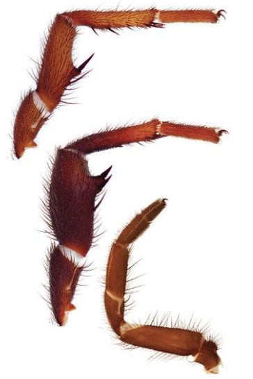
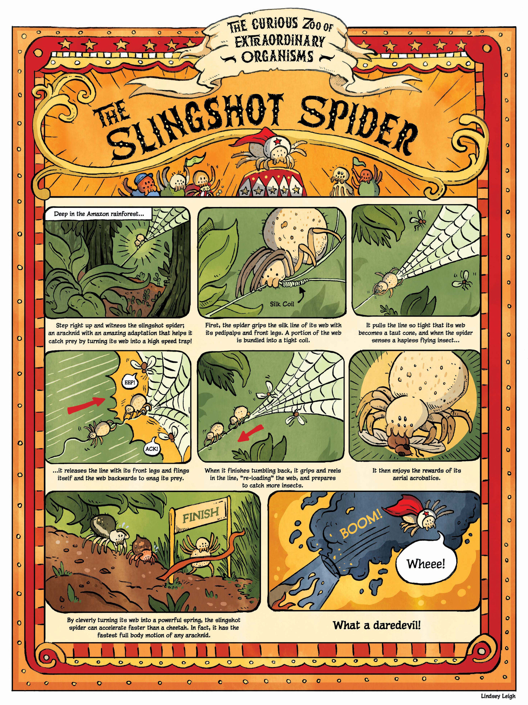

Spider - Arachnida
Spiders have seven joints for each leg. They extend their legs using hydraulic pressure by forcing blood (hemolymph) into them. If a spider loses too much blood, it no longer has enough internal pressure to fully push its legs out.

Spider legs are covered with hundreds of tiny hairs connected to the nervous system. They use these hairs to sense and interact with their environment.
Source: The Strange Science of Necrobotics by CBC Kids
https://www.youtube.com/watch?v=_T0kYffwNUo

Source: The Slingshot Spider by Lindsey Leigh
https://www.linseedling.com/science-comics?pgid=lkjyvynf-ac3a43ed-41c0-4399-b6b4-4799cd1c192a
From:
https://www.linseedling.com/science-comics